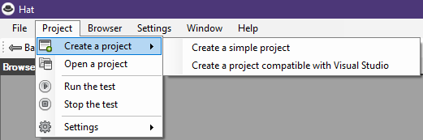
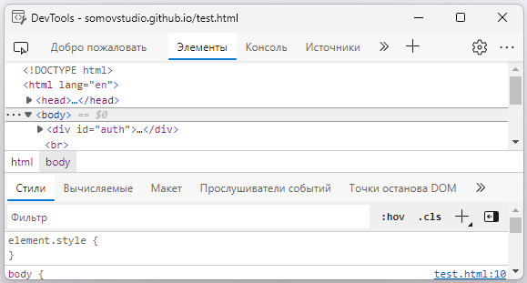
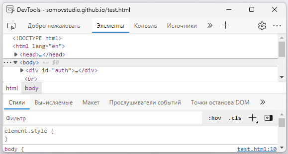

The main menu
Menu "File" - allows you to save logs to txt files.

Menu "Project" - creating and opening autotest projects, performing and stopping autotests, as well as settings.


Menu "Browser" - it serves as a browser navigation, as well as allows you to open the developer dashboard "Development Tool" and open the Internet Explorer 11 window
 

Menu "Settings" - setting the program language

Menu "Window" - allows you to hide or display the system browser windows.

Menu "Help" - contains background information and links to the update and plugin

Created with the Personal Edition of HelpNDoc: Easily create iPhone documentation